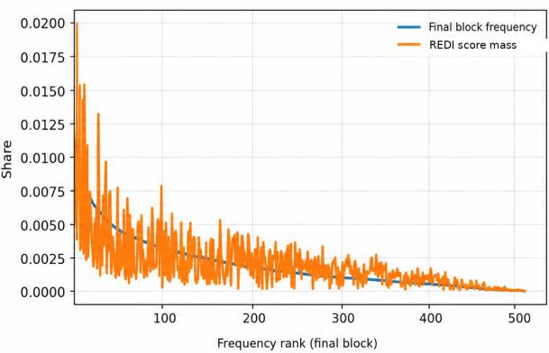

论文显示 corpus-level class statistics 与 image-level attention 对 frozen ViT token reduction 可互补。
REDI: Corpus Aware Patch Ranking for DINOv3 Token Reduction Chanjong Im , Sebastian Diem , Thomas Mandl；机构信息 arXiv 列表未稳定提供。 arXiv new; DINOv3 token reduction 原文链接
先说结论。作为视觉 token 选择的上界/诊断有价值，但不建议精读。 论文显示 corpus-level class statistics 与 image-level attention 对 frozen ViT token reduction 可互补。
Figureure 1 · Overview of REDIFigure 1. Overview of REDI. Four transformed views provide class-conditioned visual TF-IDF scores aligned to a reference center crop, and a separate dense pass provides incoming attention mass from final-block attention columns. Independent normalization and elementwise multiplication produce the REDI score, which ranks patches for the fixed keep, merge, and compress operator and weights aggregation. With precomputed REDI scores, the frozen backbone and unchanged classifier, the 107 token reduced path reaches 84.706% Top-1 accuracy.这张图概括 REDI 的整体方法流程。阅读时先看模块之间传递的训练信号，再看作者如何把目标拆成可优化的子问题。

Figureure 2 · Visual word assignment distributions and REDI score massFigure 2. Visual word assignment distributions and REDI score mass. Left: visual word frequency by rank for separate $K = 5 1 2$ analysis codebooks fitted at selected DINOv3 blocks, showing heavy-tailed, Zipf-like usage. Right: final block validation assignments sorted by frequency, with REDI score mass accumulated over the same visual words. The different profiles show that REDI score mass is not determined by raw frequency alone. The analysis codebooks are separate from the codebook used for $\mathrm { T F I D F _ { g t } }$这张图来自论文 PDF 的结构化抽取。当前用于辅助理解 REDI 的方法或实验，请结合正文精读段落一起看。